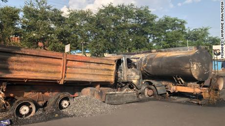

(CNN)At least 98 people died on Friday after a fuel tanker exploded in a suburb of Sierra Leone's capital, Freetown, according to authorities in the West African country.
Mohamed Lamrane Bah, director of communications for Sierra Leone's National Disaster Management Agency (NDMA), told CNN that several people were also in critical condition following the explosion.
Authorities have transferred injured people to hospitals and collected the bodies, and the rescue effort at the scene has ended, Bah added.
Leia mais!Iraqi Prime Minister Mustafa Al-Kadhimi is seen in Baghdad in July.
Spanish police search for passengers who fled plane after emergency landing in...
Analysis: A deadly crisis is brewing in the Balkans -- and the West's too ...
Why classic cars are the next big thing in electric vehicles...
(CNN) When Italy first went into a coronavirus lockdown last year, Khabane Lame had just lost his job at a factory near the northern city of Turin.
He spent his days holed up at his parents' home in Chivasso with his three siblings, looking for other jobs. One day, he downloaded TikTok and started tinkering with it in his bedroom, posting videos of himself under the name Khaby Lame. And gradually, a surprising career was born.
At first, like a lot of TikTokers, he created clips of himself dancing, watching video games or doing comedy stunts. Then, earlier this year, he began making fun of the life-hack videos that flood social media platforms -- reacting to them with a wordless shrug or a look of exasperation -- and he struck a chord.
Now Lame (prounouced Lah-MAY) is the most popular man on TikTok, with 114 million followers. The only other person ahead of him is dancer Charli D'Amelio, a California teen who posts playful videos, often with her older sister Dixie.
And Lame, 21, does it all without saying a word. On TikTok, his silence speaks volumes. "I came up with the idea because I was seeing these videos circulating, and I liked the idea of bringing some simplicity to it," Lame told CNN in a recent video interview.
Leia mais!Iraqi Prime Minister Mustafa Al-Kadhimi is seen in Baghdad in July.
Spanish police search for passengers who fled plane after emergency landing in...
Analysis: A deadly crisis is brewing in the Balkans -- and the West's too ...
Why classic cars are the next big thing in electric vehicles...